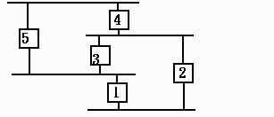
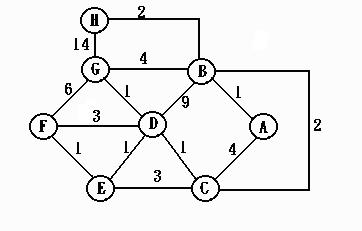
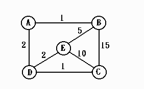

作業二
- 乙太網路使用的通訊協定是1-persistent CSMA，
有些研究人員覺得應該用p-persistent
CSMA，你覺得呢?
- 乙太網路的一個時槽是多少時間?這與最小frame長度有何關係?
在高速乙太網路中，時槽與最小frame長度有何改變?
- 我們要如何使用sequence number, acknowledge, timer, retransmission等方法來提供完全可靠的傳輸(如IEEE
802.2的type 2 service)? 這四種方法中，有那一個不一定要使用仍可以達到完全可靠的傳輸?
- 以下情況下，GBN與SR那一個會表現比較好?
(你必須先決定以那些performance
metric來比較)
- long propagation, no transmission error
- long propagation, moderate random transmission error
- burst transmission error
- 如果使用n-bit sequence number，那麼SR與GBN的最大sending
window size是多少?試證明之。
- Transparent bridge的功能包括那些?Transparent bridge的過濾資料庫為什麼需要登錄時間?
- 舉例說明Transparent bridge的功能如果沒有spanning tree
的演算法會造成何麼問題?下面的網路中，依spanning tree algorithm會形成怎樣的一個spanning
tree? (假設bridge到每一個區域網路的費用是1。)

- 利用LS routing 找出下圖中F到其他router的最短路徑及其routing
rable 。

- 利用VD routing 找出下圖中E的distance table及其routing
rable (假設已經收斂了)。

- 比較 LS routing 與 VD routing 的不同。VD routing 會遇到什麼問題?如何解決?